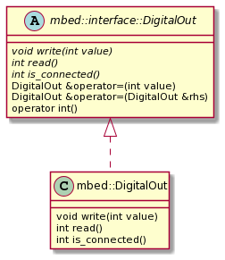
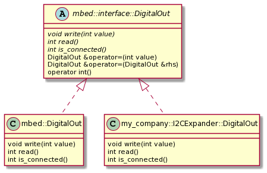

Driver Interfaces (Experimental)
Note: Polymorphic driver interfaces are still experimental and must be manually enabled by adding the EXPERIMENTAL_API feature to your project in your application configuration.
Motivation and overview
Mbed driver APIs are intended to provide a solid foundation upon which to build cross-platform third-party libraries and higher level device drivers. With this goal in mind, an experimental feature has been introduced into Mbed's driver API hierarchy: interfaces and polymorphism.
Previously, polymorphism and virtual inheritance have been avoided in Mbed's core hardware driver APIs due to the potential memory and speed implications. Virtual inheritance adds virtual tables (vtables) to each inheriting class; this results in a slightly larger memory footprint for each instance of a virtual class. Not only this, but when a method is being called on a pointer to a virtual class (and therefore the concrete type of the underlying object is not known at compile time), there is an additional runtime step involved where the correct virtual method must be looked up in the class's vtable. In some high speed use cases, this added latency can be unacceptable.
With the introduction of C++11, the language now has features to help optimize the above situation. Namely, the final keyword.
Subclasses inheriting from virtual base classes may now be marked final, which seals them from further inheritance. This allows the compiler to optimize calls to virtual methods in some cases, including inlining and removing the vtable lookup entirely. It must be stressed that this can eliminate the vtable lookup and associated latency, but ultimately it is up to the compiler to do so.
Unfortunately, at time of writing, toolchain support for pruning unused vtables is not widely supported and so the memory usage increase associated with virtual inheritance is unavoidable. This is the primary reason Mbed's developers have decided to make this feature experimental and disabled by default. For some very memory-constrained targets this memory usage increase would be unacceptable.
Using driver polymorphism in your code
Even though this feature is still experimental, you can start writing code that takes advantage of driver polymorphism now.
As an example use case, consider the scenario where your target has a limited number of internal GPIO available. You have run out of GPIO but need to control an RGB LED for user feedback. Now, your hardware team is very smart, and they've solved the problem for you: they've added an external GPIO expander IC that's accessible over I2C! You've already developed a very well tested and complex LED animation library but it has a structure like so:
class LEDAnimator {
LEDAnimator(PinName red, PinName green, PinName blue) :_red(red), _green(green), _blue(blue) { ... }
private:
mbed::DigitalOut _red;
mbed::DigitalOut _green;
mbed::DigitalOut _blue;
}
As it is now, your library only supports using internal GPIO. This obviously won't work with the external GPIO expander IC!
Previously, your only options were:
- Rewrite your animation library to use the I2C-based GPIO expander. This creates an entirely separate fork of your library to maintain in the best case.
- Add extra code to conditionally handle the case where your library is using an external I2C-connected GPIO expander rather than internal GPIO. This complicates your library and makes the code much less readable. Additionally, what happens when your hardware team uses a SPI-connected GPIO expander in the next design?
With driver polymorphism, the problem is much easier to solve.
When enabled, supported drivers will inherit from a driver interface:

Note that some behavior is defined in the interface itself, namely, some operators. These operators are defined here to make it intuitive to use all implementations of a given driver interface, even when mixing them together.
You can always evaluate a mbed::interface::DigtialOut as an int (which returns the state of the output), and you can always assign the value of one mbed::interface::DigitalOut to another mbed::interface::DigitalOut in an intuitive manner using the assignment "=" operator.
Let's get back to the above example. What you can do now, with driver polymorphism, is make it possible for your external I2C-connected GPIO expander to act like a DigitalOut and be compatible with any API that uses mbed::interface:DigitalOut:

This hierarchy minimizes the changes you need to make to your existing library.
The recommended pattern for designing third party libraries that take advantage of driver polymorphism is to use pointers to the interface of the driver you're using. For example, we can refactor the LEDAnimator class to the following:
class LEDAnimator {
/**
* Optional constructor to maintain backwards compatibility. This constructor
* dynamically allocates its own DigitalOut instances internally.
*/
LEDAnimator(PinName red, PinName green, PinName blue) : _internally_created(true) {
_red = new mbed::DigitalOut(red);
_green = new mbed::DigitalOut(green);
_blue = new mbed::DigitalOut(blue);
}
LEDAnimator(mbed::interface::DigitalOut *red, mbed::interface::DigitalOut *green, mbed::interface::DigitalOut *blue) : _red(red), _green(green), _blue(blue), _internally_created(false) {
// do something
}
~LEDAnimator() {
// Make sure to delete the instances if they were dynamically allocated!
if(_internally_created) {
delete _red;
delete _green;
delete _blue;
}
}
private:
mbed::interface::DigitalOut *_red;
mbed::interface::DigitalOut *_green;
mbed::interface::DigitalOut *_blue;
bool _internally_created;
};
Now it is possible for your existing library to use the external GPIO expander without any knowledge that it is external. As long as your my_company::I2CExpander::DigitalOut class implements the mbed::interface::DigitalOut interface properly, your code will work as it did before. You can even have some of the GPIO be internal or external if your design calls for it!
Backwards compatibility
Since driver polymorphism is still experimental, it is disabled by default. Therefore, Mbed's developers have been careful to make sure any code using the existing, non-polymorphic driver classes is not affected by the introduction of this new class hierarchy.
The inheritance of a driver from the new driver interface is conditional upon FEATURE_EXPERIMENTAL_API being added to your project's configuration. However, it is still possible for you to develop APIs now that are compatible with both polymorphic and non-polymorphic drivers.
When FEATURE_EXPERIMENTAL_API is disabled, the following type alias is made instead:
using mbed::interface::DigitalOut = mbed::DigitalOut;
This allows your new code library to be compiled with or without driver polymorphism enabled, since mbed::interface::DigitalOut will just fall back to the familiar, non-polymorphic mbed::DigitalOut.
Design considerations and caveats
As mentioned before, virtual inheritance and polymorphism do have an impact on the resulting binary. For extremely constrained targets, you can optimize away a bit of memory consumption by disabling driver polymorphism (which is currently the default). Then there is the impact on execution speed that can result from virtual inheritance.
In some cases, such as a software ("bit-banged") UART implementation or similar, a small change in execution speed can have disastrous effects on your code's timing.
Fortunately, you can still take advantage of driver polymorphism and maintain high speed operation when you need it.
When driver polymorphism is enabled, Mbed's driver implementations are marked final. This accomplishes two things:
- It prevents any further inheritance from the
finalclass. - It hints to the compiler that a pointer or reference to this class will never point to anything but an instance of this class.
The latter effect allows us to minimize the impact of virtual inheritance on execution speed in some cases. If the compiler knows the concrete type of the driver object at runtime, it may eliminate or inline the vtable redirection. In our testing, we have seen this optimization result in no speed hit when toggling a pin on and off in a while loop. Your results may vary depending on your target's HAL implementation, however.
To improve the compiler's ability to optimize calls to a polymorphic driver in this way, you should use the following guidelines when designing your third party libraries:
When your library does not have any high speed requirements, you should use a pointer/reference to the driver interface (for example: mbed::interface::DigitalOut*). This gives your library maximum flexibility by allowing it to use polymorphic subtypes of the given interface.
When your library does have high speed requirements (such as the "bit-banged" example mentioned previously), you should use a pointer/reference to Mbed's driver implementation type directly (for example: mbed::DigitalOut*). Since the compiler knows the concrete type is Mbed's implementation (which is final), it may inline calls to that type, maintaining the execution speed possible with polymorphism disabled.